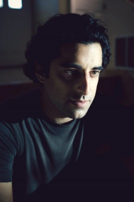

#7159 Die 10 Gebote
Alternativ: The Ten Commandments

 IMDB-Wertung: 5.4 / 10
IMDB-Wertung: 5.4 / 10  Metascore: 0
Metascore: 0 
When an oracle prophesizes that a child will become Prince of Egypt, a time of danger approaches the kingdom. The Egyptian Pharaoh orders the massacre of all newborn males. But one child, Moses-the son of a Hebrew slave-escapes certain death when he is set adrift on the Nile. As years pass, he is raised in a royal Egyptian household and, with no memory of his family, rises to the stature of prince. Upon discovery of his true heritage, and inspired by a fiery message from God, Moses embarks upon a noble and desperate fight to reclaim his destiny as the leader and liberator of the Hebrew people.
Jahr: 2006
Dauer: 175 Minuten
FSK:
Land: USA Studio: ABCTonspuren:
Untertitel:
Auflösung: 1080p (1920x1072) Größe: 11366 MB
Genre: Action, Drama, Abenteuer, Krieg, Geschichte, Biographie, TV-Serie
Regisseur: Robert Dornhelm
Drehbuch: Charles McKeown
Soundtrack:
Darsteller:
 Dougray Scott als Moses
Dougray Scott als Moses Linus Roache als Aaron
Linus Roache als Aaron Naveen Andrews als Menerith
Naveen Andrews als Menerith Mía Maestro als Zipporah
Mía Maestro als Zipporah Paul Rhys als Ramses
Paul Rhys als Ramses Richard O'Brien als Anander
Richard O'Brien als Anander Silas Carson als Jered
Silas Carson als Jered- Padma Lakshmi als Princess Bithia
 Susan Lynch als Miriam
Susan Lynch als Miriam Claire Bloom als Rani
Claire Bloom als Rani Omar Sharif als Jethro
Omar Sharif als Jethro- Peter Gevisser als Reuven
 Greg Hicks als Jekuthiel
Greg Hicks als Jekuthiel- Rudy Ruggiero als Tribesman #1
-  Karim Saleh als Joshua
 Adrian Schiller als Shemaiah
Adrian Schiller als Shemaiah David Schneider als Tobia
David Schneider als Tobia Matthew Sim als Soothsayer
Matthew Sim als Soothsayer John Wark als Laban
John Wark als Laban- Rachid Abbad als Overseer #3
- Latefa Ahrrare als Tribes Woman #3
- Ashley Artus als Sichem
- Hicham Bahloul als Tribeman #2
- Said Bey als Tribeman #3
- John Boswall als Egyptian Priest
- Julius D'Silva als Pharaoh
- Simon De Selva als Overseer #1
- Paschal Friel als Egyptian Officer Amon
- Patrick Gordon als Balaam
- Ben Hammersley als Young Moses
- Louis Hilyer als Amram
- Hanane Ibrahimi als Tribes Woman #2
- Lisa Jacobs als Jochebed
- Maria Jittou als Chief Maid
 Stefan Kalipha als Chief Minister
Stefan Kalipha als Chief Minister- Tom Keller als Yitzchak
- Khanssa Machkkour als Young Miriam
- Marina Morgan als Leah
- Hamid Nider als Palace Sorcerer
- Firlid Othminni als Young Gershom
- Mohamen Mehdi Ouazanni als Leah's Husband
- Sally Patrick als Tribes Woman #1
 Peter Renaday als Narrator
Peter Renaday als Narrator- Ian Ricketts als Heber
 Hannah Taylor Gordon als Rachel
Hannah Taylor Gordon als Rachel
Datei: X:\2006(A-F)\10 Gebote, Die (2006, FSK, 1920x1072).mkv seit 02.10.2017
Festplatte: HD 2005(G-Z)-2006(A-Z)
 Es gibt insgesamt 56 Filme in der Gruppe '2006(A-F)'
Es gibt insgesamt 56 Filme in der Gruppe '2006(A-F)'